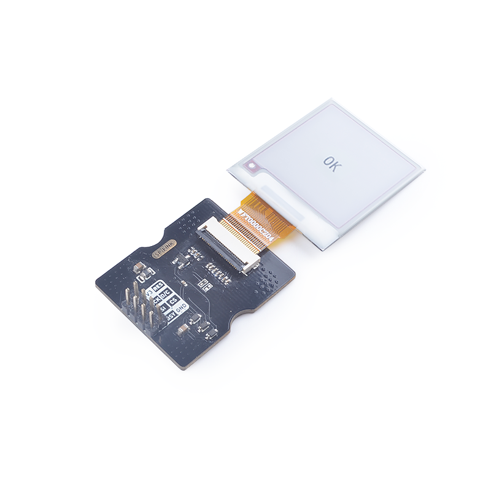
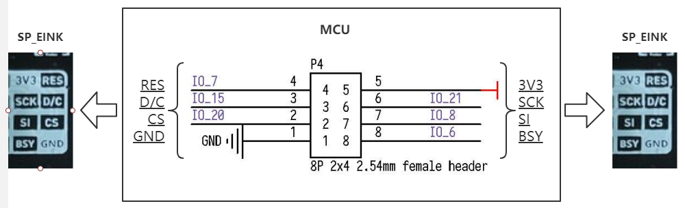
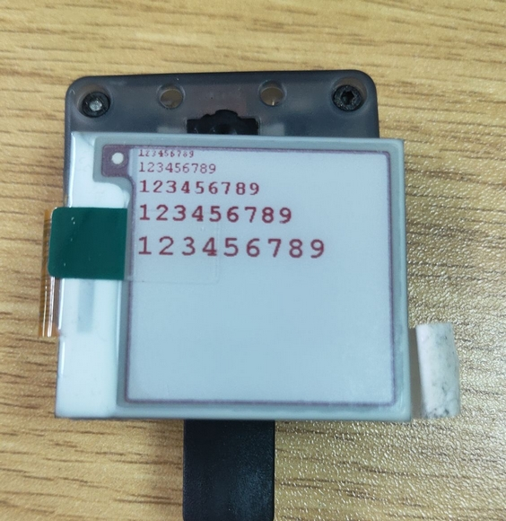
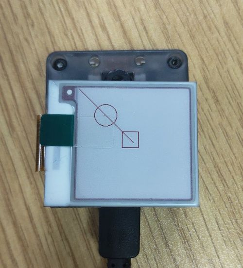
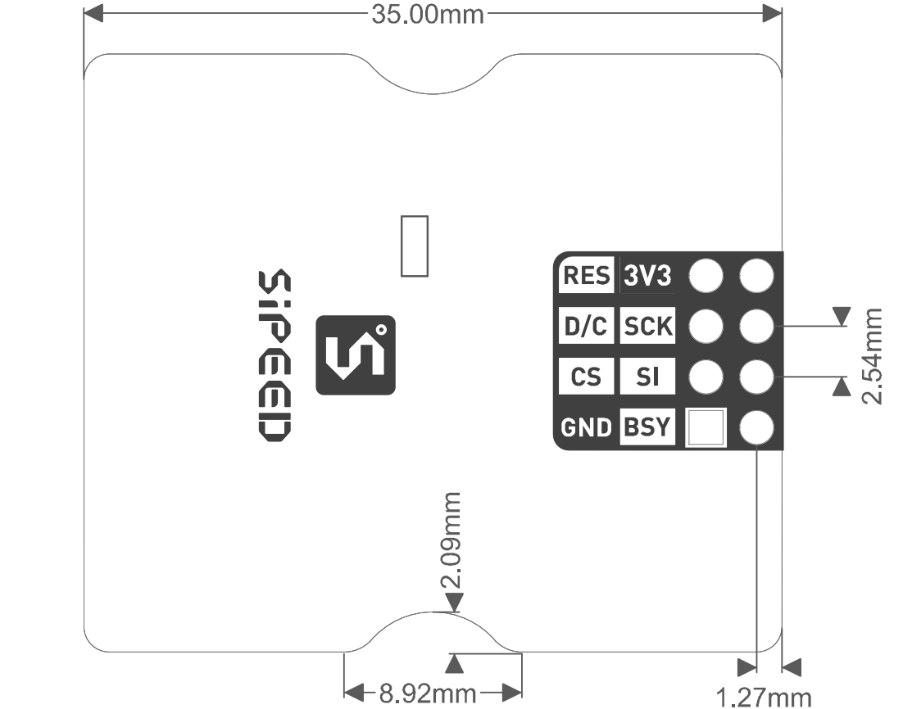

SPMOD - Eink
概述

SPMOD_Eink(墨水屏模块)采用 GDEW0154M09 电子墨水屏。
SPMOD - Eink 介绍
- 采用 Sipeed-SPMOD 接口(2.54mm * 8PIN 排针)，统一 MaixPy 开发板接口
- 通过SP-MOD SPI接口与屏幕底板相连
- 电子墨水屏：GDEW0154M09是一款1.54”，SPI接口控制，拥有24P FPC(0.5mm间距)接口的电子墨水屏。拥有超广可视角。
- 支持 1 bit 黑/白显示
- 分辨率：200x200
- 模块尺寸：35303.8mm
GDEW0154M09 电子墨水屏介绍
| 功能特点： | 参数 |
|---|---|
| 工作电压 | 2.3V~3.6V |
| 工作电流 | 1~3mA |
| 工作温度范围 | -40℃~85℃ |
| 休眠电流 | <5uA |
| 屏幕大小 | 1.54英寸 |
| 有效显示区域 | 27.6mm |
| 分辨率 | 200*200 |
| 色彩 | 1 bit 黑/白显示 |
| 对外接口 | 24P FPC (0.5mm间距) |
内部集成电路包含门缓冲器、源缓冲器，接口，时序控制逻辑，振荡器，DC-DC，SRAM，LUT，VCOM
SPMOD_Eink 模块引脚定义：
| 引脚序号 | 引脚名称 | 类型 | 引脚说明 |
|---|---|---|---|
| 1 | GND | G | 模块电源地 |
| 2 | CS | I | SPI片选引脚 |
| 3 | D/C | I | 数据/命令输入切换引脚 |
| 4 | RES | I | 模块复位引脚，低有效 |
| 5 | 3V3 | V | 模块电源输入正 |
| 6 | SCK | I | SPI串行时钟引脚 |
| 7 | SI | I/O | MOSI数据引脚，主机输出从机输入 |
| 8 | BSY | O | BUSY状态输出引脚 |

- 接线方式：
| MCU:FUN(IO) | SP_Eink |
|---|---|
| GPIOHS(IO_7) | RES |
| SPIOHS(IO_15) | D/C |
| SPIOHS(IO_20) | CS |
| SPI:SCK(IO_21) | SCK |
| SPI:MOSI(IO_8) | SI |
| GPIOHS(IO_6) | BSY |
| 2.3-3.6V | 3.3V |
| GND | GND |

基本指令列表
| 指令 | 功能 |
|---|---|
| 0x10 | 开始发送黑白图像 |
| 0x13 | 开始发送红白图像 |
| 0x12 | 刷新图像到屏幕 |
更多指令信息参考GDEW0154M09.pdf
使用例程
流程
- 初始化配置
- 创建 Image 并填充
- 发送图像并刷新
C 示例：
spi_init(1, SPI_WORK_MODE_0, SPI_FF_STANDARD, DATALENGTH, 0);
fpioa_set_function(SPI_Eink_CS_PIN_NUM, FUNC_SPI1_SS0); // SPI_Eink_CS_PIN_NUM: 20;
fpioa_set_function(SPI_Eink_SCK_PIN_NUM, FUNC_SPI1_SCLK); // SPI_Eink_SCK_PIN_NUM: 21;
fpioa_set_function(SPI_Eink_MOSI_PIN_NUM, FUNC_SPI1_D0); // SPI_Eink_MOSI_PIN_NUM: 8;
fpioa_set_function(SPI_Eink_DC_PIN_NUM, FUNC_GPIOHS0 + SPI_Eink_DC_GPIO_NUM); // SPI_Eink_DC_PIN_NUM: 21;
fpioa_set_function(SPI_Eink_RST_PIN_NUM, FUNC_GPIOHS0 + SPI_Eink_RST_GPIO_NUM); // SPI_Eink_RST_PIN_NUM: 7;
fpioa_set_function(SPI_Eink_BL_PIN_NUM, FUNC_GPIOHS0 + SPI_Eink_BL_GPIO_NUM); // SPI_Eink_BL_PIN_NUM: 6;
gpiohs_set_drive_mode(SPI_Eink_DC_GPIO_NUM, GPIO_DM_OUTPUT);
gpiohs_set_drive_mode(SPI_Eink_RST_GPIO_NUM, GPIO_DM_OUTPUT);
gpiohs_set_pin(SPI_Eink_DC_GPIO_NUM, GPIO_PV_HIGH);
gpiohs_set_pin(SPI_Eink_RST_GPIO_NUM, GPIO_PV_HIGH);
gpiohs_set_drive_mode(SPI_Eink_BL_PIN_NUM, GPIO_DM_INPUT_PULL_UP);
gpiohs_set_pin_edge(SPI_Eink_BL_PIN_NUM, GPIO_PE_BOTH);
EPD_DisplayInit(); //EPD init
//Paint initialization
Paint_NewImage(BlackImage, EPD_WIDTH, EPD_HEIGHT, 270, WHITE); //Set screen size and display orientation
Paint_SelectImage(BlackImage); //Set the virtual canvas data storage location
Paint_Clear(WHITE); //clear paint
Paint_DrawString_EN(0, 0, "sipeed", &Font8, WHITE, BLACK); //5*8
Paint_DrawString_EN(0, 10, "sipeed", &Font12, WHITE, BLACK); //7*12
Paint_DrawString_EN(0, 25, "sipeed", &Font16, WHITE, BLACK); //11*16
Paint_DrawString_EN(0, 45, "sipeed", &Font20, WHITE, BLACK); //14*20
Paint_DrawString_EN(0, 80, "sipeed", &Font24, WHITE, BLACK); //17*24
EPD_FullDisplay(BlackImage, BlackImage, 0); //display image
MaixPy 例程：
spi1 = SPI(SPI.SPI1, mode=SPI.MODE_MASTER, baudrate=600 * 1000,
polarity=0, phase=0, bits=8, firstbit=SPI.MSB, sck=21, mosi=8)
fm.register(20, fm.fpioa.GPIOHS20, force=True) # SPI_Eink_SS_PIN_NUM: 20;
fm.register(15, fm.fpioa.GPIOHS15, force=True) # SPI_Eink_DC_PIN_NUM: 15;
fm.register(6, fm.fpioa.GPIOHS6, force=True) # SPI_Eink_BUSY_PIN_NUM: 6;
fm.register(7, fm.fpioa.GPIOHS7, force=True) # SPI_Eink_RST_PIN_NUM: 7;
cs = GPIO(GPIO.GPIOHS20, GPIO.OUT)
dc = GPIO(GPIO.GPIOHS15, GPIO.OUT)
busy = GPIO(GPIO.GPIOHS6, GPIO.IN, GPIO.PULL_DOWN)
rst = GPIO(GPIO.GPIOHS7, GPIO.OUT)
epd = SPEink(spi1, cs, dc, rst, busy, SPEink_WIDTH, SPEink_HEIGHT, SPEink_ROTATION)
epd.init()
img = image.Image()
img = img.resize(200, 200)
img.draw_line(0, 0, 100, 100)
epd.display(img)
运行环境
| 语言 | 开发板 | SDK/固件版本 |
|---|---|---|
| C | MaixCube | kendryte-standalone-sdk v0.5.6 |
| MaixPy | MaixCube | maixpy v0.5.1 |
MaixPy固件建议自行从最新源码编译
运行结果
C

MaixPy

移植
修改以下参数即可
C
// board_config.h #define SPI_INDEX 1 #define SPI_SCLK_RATE 600 * 1000 #define SPI_CHIP_SELECT_NSS 0 //SPI_CHIP_SELECT_0 #define SPI_Eink_CS_PIN_NUM 20 #define SPI_Eink_SCK_PIN_NUM 21 #define SPI_Eink_MOSI_PIN_NUM 8 #define SPI_Eink_DC_PIN_NUM 15 #define SPI_Eink_BL_PIN_NUM 6 #define SPI_Eink_RST_PIN_NUM 7 #define SPI_Eink_DC_GPIO_NUM 15 #define SPI_Eink_BL_GPIO_NUM 6 #define SPI_Eink_RST_GPIO_NUM 7MaixPy
################### config ################### SPI_Eink_NUM = SPI.SPI1 SPI_Eink_DC_PIN_NUM = const(15) SPI_Eink_BUSY_PIN_NUM = const(6) SPI_Eink_RST_PIN_NUM = const(7) SPI_Eink_CS_PIN_NUM = const(20) SPI_Eink_SCK_PIN_NUM = const(21) SPI_Eink_MOSI_PIN_NUM = const(8) SPI_Eink_FREQ_KHZ = const(600) ##############################################
参考设计
- SPMOD_Eink 尺寸图：

资源链接
| 资源 | --- |
|---|---|
| 官网 | www.sipeed.com |
| SIPEED 官方淘宝店 | sipeed.taobao.com |
| Github | https://github.com/sipeed |
| BBS | http://bbs.sipeed.com |
| MaixPy 文档官网 | http://maixpy.sipeed.com |
| Sipeed 模型平台 | https://maixhub.com |
| SDK 相关信息 | https://dl.sipeed.com/shareURL/MAIX/SDK |
| HDK 相关信息 | https://dl.sipeed.com/shareURL/MAIX/HDK |
| E-mail(技术支持和商业合作) | Support@sipeed.com |
| telgram link | https://t.me/sipeed |
| MaixPy AI QQ 交流群 | 878189804 |
| MaixPy AI QQ 交流群(二群) | 1129095405 |